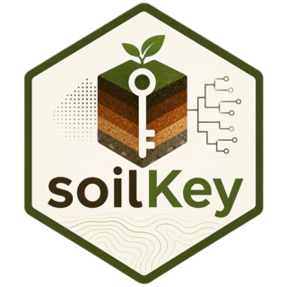

Classify the USDA family (5th level) of a pedon
Source:R/familia-usda.R
classify_usda_family.RdRuns the applicable family-modifier dimensions and returns them as a named
list of FamilyAttribute objects (multi-label; each dimension
is orthogonal). Mirrors classify_sibcs_familia.
Usage
classify_usda_family(
pedon,
order_code = NULL,
subgroup_code = NULL,
infer_temperature = FALSE,
great_group = NULL,
subgroup = NULL,
suggest_mineralogy = FALSE
)Arguments
- pedon
A
PedonRecord.- order_code
Optional USDA order code (e.g.
"AF").- subgroup_code
Optional subgroup code (reserved for refinements).
- infer_temperature
Opt-in (default
FALSEsince v0.9.415): whensite$soil_temperature_regimeis not recorded, suggest a temperature class from latitude and elevation. Off, the family has no temperature class until the regime is recorded.- great_group, subgroup
Optional great group and subgroup names (e.g.
"Hapludalfs","Arenic Hapludalfs"). Withorder_codethey select the control section and the particle-size classes of KST 13th ed., ch. 17 (since v0.9.431);classify_usda()supplies the taxa it assigned.- suggest_mineralogy
Opt-in (default
FALSE, v0.9.432): when the mineralogy class of KST 13th ed., pp. 363-366, is undecided, suggest one from stand-ins (the Kr and Ki of the sulfuric attack, CEC / clay, CaCO3, a quartz-dominatedsand_mineralogy). The suggestion setsevidence$suggestion = TRUEand keeps the missing columns;classify_usda()then warns and lowers the evidence grade to "C".
Value
Named list of FamilyAttribute objects.
Details
The dimensions, in the order of the name (KST 13th ed., p. 355):
particle_size, human_material, mineralogy,
cec_activity, reaction (calcareous, acid, nonacid, allic),
temperature_regime, depth_class (shallow),
rupture_resistance (ortstein), coatings (coated, uncoated)
and cracks (cracked) (since v0.9.433, pp. 366-370). Each is a
class, or NULL: not used in the taxon (nothing missing), or
undecided (the missing columns in $missing,
evidence$undecided = TRUE for the classes of pp. 366-370).
See also
family_label_usda, classify_usda.